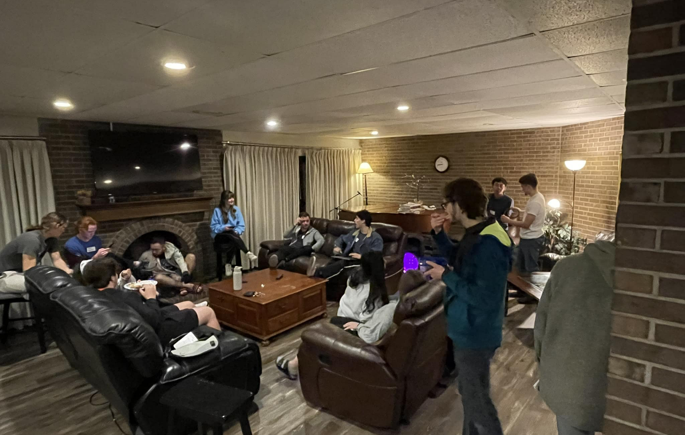
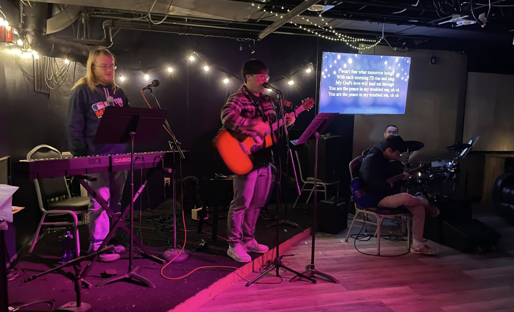
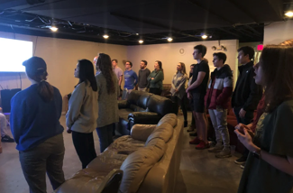
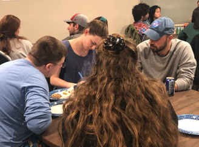
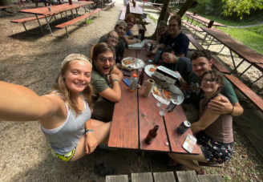
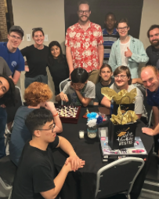

Housing
Live near campus in a Christ-centered residential community built around friendship, accountability, and belonging.
Explore HousingA place to seek God together at the University of Kentucky — a campus ministry and Christian living community for students who want to grow in faith, friendship, and purpose.
We are a community of people trying to follow Jesus on our campus, in our city, and around the world. The Wesley is UK’s Christian ministry with a residential community — a place to live, worship, pray, serve, and belong.

Live near campus in a Christ-centered residential community built around friendship, accountability, and belonging.
Explore Housing
Join weekly worship, discipleship, prayer, and conversations that help students follow Jesus in everyday life.
Learn MoreDiscover ways to serve, lead, and grow as part of what God is doing on campus and throughout Lexington.
Get StartedWesley is a home base for students — a place to ask honest questions, build real friendships, and discover what it means to follow Jesus during college and beyond.

From worship nights to shared meals, prayer, study, and everyday life, Wesley is a place where students can connect and grow.



Whether you are looking for housing, community, worship, prayer, or a place to serve, there is room for you here.